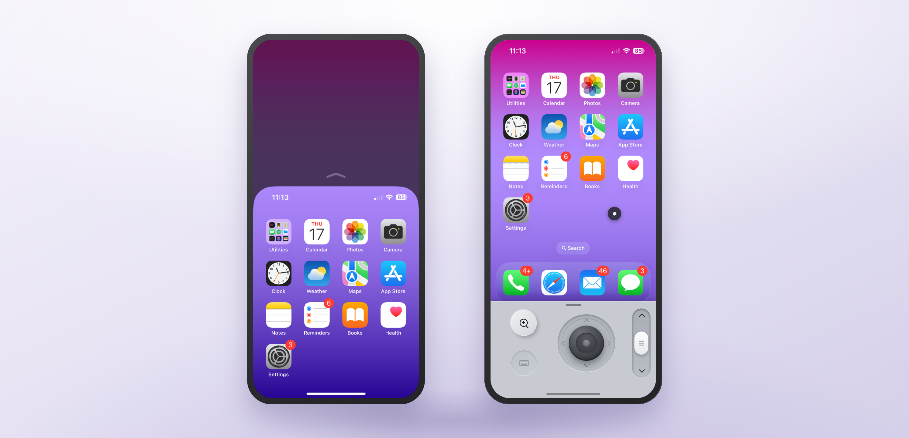
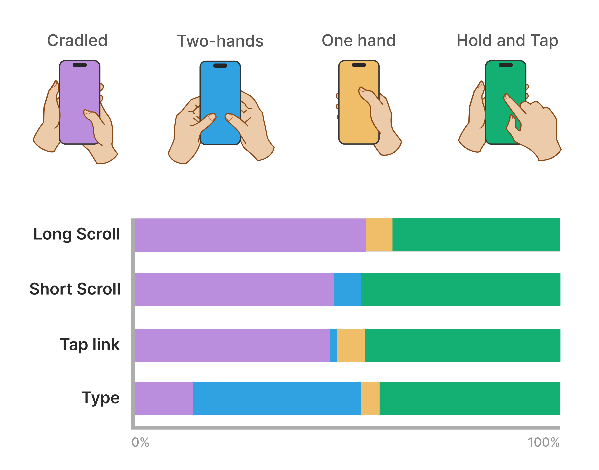
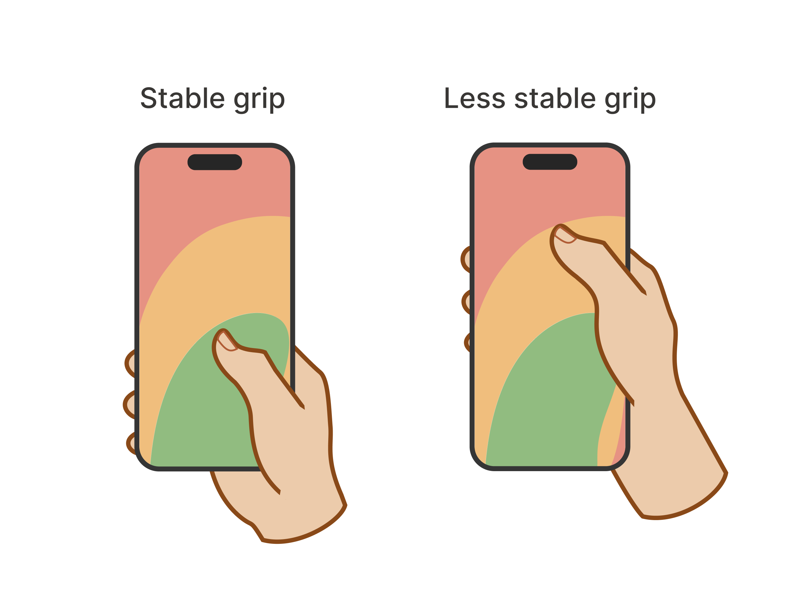
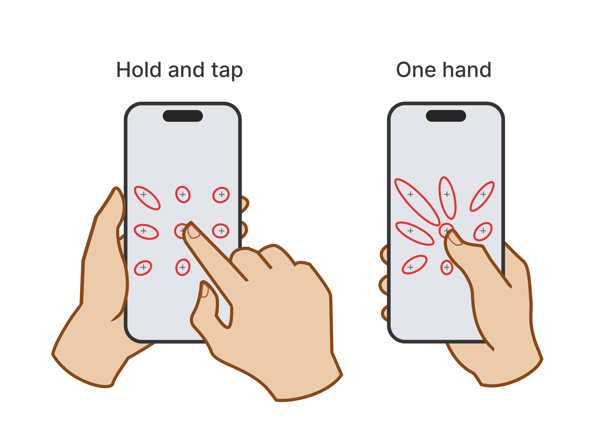

Beyond Reachability — Limitations of iPhone's One-Handed Mode
I used HCI research and hand ergonomics literature to examine where Apple's existing one-handed features fall short, then explored a way to turn one-handed interactions into a full-time mode rather than a temporary accommodation.

Apple's Reachability (left) vs. the proposed full-time control panel (right).
Context
Larger screens make one-handed use more difficult.
Larger iPhones make complex tasks easier by showing more content at once. But as screens grow, more of the interface moves beyond comfortable thumb reach, and it gets harder to operate the phone with only one hand.
Why is one-handed accommodation necessary?
One-handed interactions are not just an edge case. Many people use their phones one-handedly out of necessity and require accessibility accommodations for doing so.
Upper-extremity impairments
For some users, using a second hand is not a reliable option at all, rather than simply being inconvenient.
Multitasking with one hand occupied
Multitasking while holding a phone can make one-handed use situational rather than optional.
Smaller hands
Thumb reach is a physical constraint that makes phone use more difficult for users with smaller hands.
Reliance on accessibility features
For some people, one-handed use is part of how they operate their phone, not an occasional convenience.
The Problem
Existing one-handed modes behave more like temporary reachability accommodations than permanent solutions to one-handed use.
The Mission
Propose a solution that supports continuous one-handed use without limiting the screen space.
Current shortfalls
Limitations of iPhone's one-handed features
iOS offers Reachability and a one-handed keyboard as accessibility features aimed at improving one-handed use of bigger phones. But these features don't work together to offer a comprehensive solution to one-handed use.
Issue 01
Reachability requires repeated activation and hides half the screen space
Reachability drops the interface toward the bottom of the screen so the thumb can reach the upper half, but it also hides the lower half of the interface, and requires repeated activation.
Issue 02
The keyboard moves but other UI controls don't
The iOS keyboard has the option to shift the keys toward the thumb, but other UI controls such as the predictive text remain difficult to reach.
Issue 03
Two-finger gestures can't be performed when holding the phone one-handedly
Pinch-to-zoom and other two-finger interactions simply can't be performed when gripping the phone one-handedly.
Competitive analysis
How do other phones handle reachability and one-handed mode?
I compared how major phone models such as Samsung, Google Pixel, and Huawei approached one-handed mode and whether they offered any alternative solutions.
Shrink the entire interface
The entire interface becomes a smaller, draggable window. This improves reachability, but reduces the effective screen size.
Shift down the interface
The interface shifts to the bottom and stays there until the user decides to exit this mode. This solves reachability, but hides half of the screen.
Insight
All current solutions come at the cost of losing valuable screen space.
Research
Thumb ergonomics: understanding the thumb's role in one-handed modes
To understand what a continuous one-handed solution needed to support, I looked beyond screen size and thumb reach. Steven Hoober's research combines field observations, usability studies, and a review of existing research to examine how people hold, touch, and interact with mobile devices. I used the findings from his study to identify the interaction constraints the solution needed to address.

Hoober's finding 01
Users switch grips often due to different tasks requiring different grips.
Hoober observed over 1300 people interacting with their phones and found that people change their grip depending on the interaction they're performing.
The solution should allow users to perform all tasks of different natures comfortably in one-handed mode.

Hoober's finding 02
Switching grip can help with thumb reach but reduces stability.
People adjust their grip to change the area their thumb can reach, but doing so changes the stability of the grip holding the phone.
Many users who use one-handed modes cannot risk losing grip stability, so the design should avoid patterns that force grip shifts.

Hoober's finding 03
Touch accuracy gets reduced near the far edges of the screen.
Hoober's analysis found that touch becomes more accurate toward the center and less accurate near the edges and corners.
One-handed interaction should avoid requiring precise thumb taps at distant edges.
Guiding Insight 01
Instead of moving the interface toward the thumb, could the thumb control the interface from a fixed, reachable area?
Ideation
What should the control system look like and where should it be placed?
The thumb needed to stay in a stable zone while controlling the full interface, raising the question of where that control system could live. During the ideation phase, each decision was checked against key HCI principles to ensure the solution remained effective.
Constraints that shaped concept ideation
House the control system in the keyboard area
The solution should be housed in the iOS keyboard area as it is easily reachable, and already supports one-handed use while maintaining a minimal and intuitive design.
Designing to prevent cognitive overload.
Design on top of the existing system
The solution should be built on top of Reachability and the one-handed keyboard instead of removing or replacing them; it should also be accessed through these features.
Taking an additive design approach.
Borrow from existing interface control models
The solution should borrow from interaction models and concepts that users are already familiar with, such as mice, keyboards, trackpads, and game controllers.
Leveraging users' existing mental models.
Initial concepts
Two control metaphors were explored: a trackpad and a joystick, both integrated into the keyboard area to control the entire interface.
A laptop style trackpad
A trackpad-like surface is added to the keyboard area to allow the thumb to move a cursor around the screen and control the interface.
Pros ✓
Trackpads are one of the most common and popular interface control models.
Cons ✗
Difficult to operate with a thumb as trackpads are usually operated with pointer fingers. Actions like scrolling and zooming still require two fingers.
A game controller joystick
The flat surface is replaced with a joystick inspired by modern game controllers such as the Nintendo Switch, rather than the bulkier traditional joysticks seen in arcades.
Pros ✓
The joystick maps naturally to a thumb's range of motion, and uses a familiar thumb-operated interaction model that many people are familiar with.
Cons ✗
Additional controls are needed for actions such as scrolling or zooming.
Final concept
A flexible control panel built into the one-handed keyboard
The joystick became the foundation for the final concept. This final concept sits within the keyboard's one-handed options and can also be activated through Reachability. It lets users quickly access the one-handed keyboard when typing and provides a reachable set of controls for navigating the full interface.
01 - Activation
Reuse the existing activation gesture.
The panel opens with the same swipe-down gesture used by Reachability. To deactivate, a visible collapse control returns back to full screen.
02 - Cursor Control
Control the screen with a joystick.
The joystick moves an on-screen cursor across the full interface. pressing down on the joystick results in a tap interaction and is accompanied by haptic feedback. Upon pressing down or pressing and dragging the joystick, the cursor turns blue to indicate that the joystick is being pressed down.
03 - Editing
Keep text actions within reach.
Long-pressing the joystick exposes familiar menu options such as cut, copy, paste above the keyboard. The menu remain within the one-handed working area instead of appearing only where the original long press occurred.
04 - Scrolling
Give scrolling its own dedicated control.
As the joystick needs to stay focused on precise cursor movement, a separate vertical control handles scrolling so the two actions do not compete for the same input.
05 - Zooming
Zoom without requiring a second finger.
A zoom control changes the cursor into a rectangular magnifying glass. The joystick can move the magnifier across the screen to inspect content in an enlarged manner without needing to use pinch-to-zoom gestures.
Limitations & Recommendations
A research-driven concept, not a user validated solution.
Most of the six week timeline of this project went into research about validating the problem, thumb-zone mapping, and supporting the case for treating one-handed mode as a full time system, before committing to a full built solution. As a result of this, the proposed solution came with a few limitations.
Validated by literature, but not users
The design is grounded in published research, but the concept of the joystick and control panel still need to be tested with real users.
The joystick concept is still an assumption
Game controller familiarity supports this concept, but phone tasks are more varied than the tasks a game controller normally handles.
Low-fidelity prototypes
With most of the timeline dedicated to research, the prototype had to stay rough as a proof of concept, with no time to refine visuals or explore edge cases.
Recommended next steps
Run user interviews with current Reachability users to surface frustrations that literature cannot reveal.
Usability-test the joystick concept with a diverse group of hand sizes, motor abilities, and controller experience.
Don't force the concept to feel justified. Be ready to revise the concept if testing doesn't support it.
Reflection
Research can establish a direction, but not validate an experience.
On research-first design
Without access to real users, published research helped identify the physical problem and support the interaction direction. It could not, however, establish whether the joystick concept would feel natural to users or whether the additional controls would introduce new friction.
Designing additively for accessibility
The constraint that mattered most in hindsight was staying additive. Rather than replacing the existing features that support one-handed mode, I guided the solution to build on top of them. This kept the concept grounded in the existing system and reduced the risk of creating a new barrier for people who already rely on the current features.